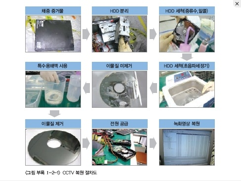
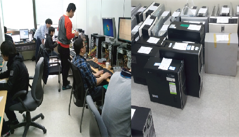
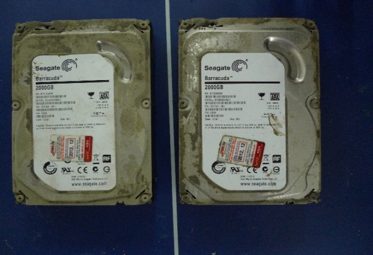

A안
기술 지원 사례
밝은 배경에 세 가지 사례를 나란히 배치합니다. 사진과 기술 지원 내용이 한눈에 들어오는 구성입니다.
국가적 디지털 재난 현장에,
명정보기술의 기술이 함께했습니다.
천안함, 3·20 전산대란, 세월호.
중요한 순간의 데이터 복구와 검증을 기술로 지원했습니다.

2010
천안함
CCTV 영상 복원 및 포렌식 검증

2013
3·20 전산대란
피해 시스템 데이터 복구

2014
세월호
CCTV 영상 복원 및 포렌식 검증
현장에서 축적한 기술과 경험
기업의 디지털 증거 분석과 보안사고 조사·대응으로 이어갑니다.